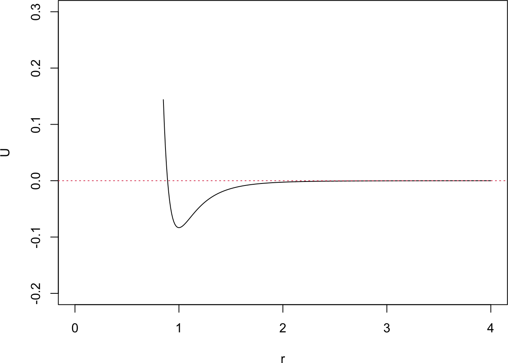
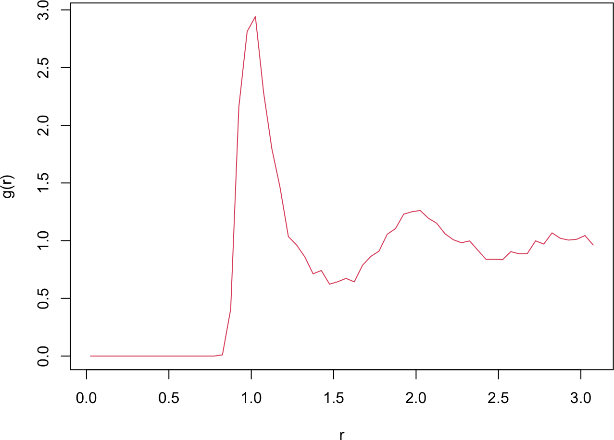
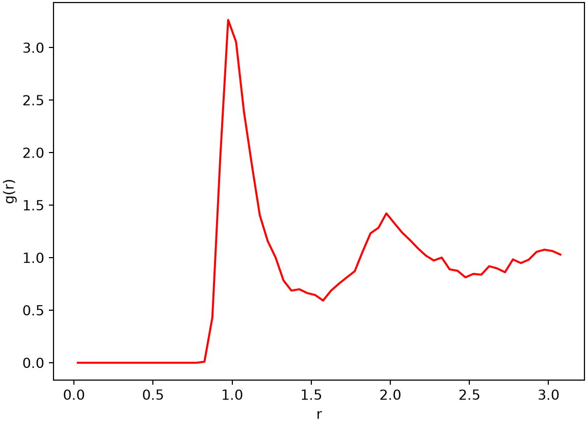

In Part 5C we studied a box of particles interacting through the Lennard-Jones potential by molecular dynamics, integrating Newton’s equations to follow the trajectory in time. Here we study the same box with the Metropolis-Hastings algorithm of Part 8B, sampling configurations directly from the Boltzmann distribution instead of propagating dynamics.
The two methods target the same equilibrium properties but from opposite angles. Molecular dynamics tracks positions and velocities through time; Monte Carlo needs only positions. The reason is that the kinetic energy in the Boltzmann distribution depends only on the velocities and factors out of the partition function (a result from statistical mechanics we take on faith here). So the sampling depends solely on the particle positions and the potential energy, and we can drop velocities and kinetic energy entirely.
8C.1 The Lennard-Jones potential
As in Part 5C, particles interact pairwise through the Lennard-Jones force
with a minimum at \(r = 1\). We write the potential as a function of \(r^2\) rather than \(r\), which lets the pairwise routines skip a square root. Distances use the periodic box and the minimum image convention introduced in Part 5C, so each particle interacts with the nearest image of every other particle.
R implementation
# Lennard-Jones potential, as a function of r squared (avoids a sqrt)potential <-function(r2) { r6 <- r2^31/ (12* r6 * r6) -1/ (6* r6)}r_all <-seq(0.85, 4, by =0.01)plot(r_all, potential(r_all^2), type ="l", xlab ="r", ylab ="U",xlim =c(0, 4), ylim =c(-0.2, 0.3))abline(h =0, lty =3, col =2)

# pairwise potential between particles i and j, minimum image conventionpotential_ij <-function(xi, xj, a) { dx <- xi - xj dx <- dx -round(dx / a) * a # nearest periodic imagepotential(sum(dx * dx))}# total potential energy over all pairspotential_tot <-function(x_all, a) { ntot <-length(x_all) /2; p_tot <-0for (i in1:(ntot -1)) { xi <- x_all[(2* i -1):(2* i)]for (j in (i +1):ntot) { xj <- x_all[(2* j -1):(2* j)] p_tot <- p_tot +potential_ij(xi, xj, a) } } p_tot}
Python implementation
import numpy as npimport matplotlib.pyplot as plt# Lennard-Jones potential, as a function of r squared (avoids a sqrt)def potential(r2): r6 = r2**3return1/ (12* r6 * r6) -1/ (6* r6)r_all = np.arange(0.85, 4, 0.01)plt.plot(r_all, potential(r_all**2), color="blue")plt.axhline(0, color="red", linestyle=":")plt.xlabel("r"); plt.ylabel("U"); plt.xlim(0, 4); plt.ylim(-0.2, 0.3); plt.show()
# pairwise potential between particles i and j, minimum image conventiondef potential_ij(xi, xj, a): dx = xi - xj dx = dx - np.round(dx / a) * a # nearest periodic imagereturn potential(np.dot(dx, dx))# total potential energy over all pairsdef potential_tot(x_all, a): ntot =len(x_all) //2; p_tot =0.0for i inrange(ntot -1): xi = x_all[2* i:2* i +2]for j inrange(i +1, ntot): xj = x_all[2* j:2* j +2] p_tot += potential_ij(xi, xj, a)return p_tot
The potential has the familiar Lennard-Jones shape: a steep repulsive wall at short range and a shallow attractive well with its minimum at \(r = 1\). A configuration is stored as a flat vector x_all of length \(2 N\), holding \((x_1, y_1, x_2, y_2, \dots)\).
8C.2 Local moves and incremental energy
Metropolis-Hastings needs the change in energy for each proposed move, not the full energy. We propose a local move, displacing one randomly chosen particle by a small amount. Because only that particle’s interactions change, we recompute just the terms involving it, which costs \(O(N)\) instead of the \(O(N^2)\) of a full recomputation. This is the same idea as the incremental energy update for the Ising model in Part 8B.
R implementation
# energy change from moving particle i to x_new (only its terms change)dp <-function(x_all, a, x_new, i) { xi <- x_all[(2* i -1):(2* i)] ntot <-length(x_all) /2; p_old <-0; p_new <-0for (j in1:ntot) {if (j != i) { xj <- x_all[(2* j -1):(2* j)] p_old <- p_old +potential_ij(xi, xj, a) p_new <- p_new +potential_ij(x_new, xj, a) } } p_new - p_old}
Python implementation
# energy change from moving particle i to x_new (only its terms change)def dp(x_all, a, x_new, i): xi = x_all[2* i:2* i +2] ntot =len(x_all) //2; p_old =0.0; p_new =0.0for j inrange(ntot):if j != i: xj = x_all[2* j:2* j +2] p_old += potential_ij(xi, xj, a) p_new += potential_ij(x_new, xj, a)return p_new - p_old
8C.3 Metropolis-Hastings sampling
We start from 25 particles on an evenly spaced grid. The box size \(a = 6.25 = 5 \times 1.25\) is chosen so the grid tiles periodically: every nearest-neighbor spacing, including across the boundary, equals 1.25. The sampler picks a random particle, proposes a small uniform displacement, wraps it back into the box, and accepts the move with the Metropolis rule using the incremental energy dp. As with the Ising model, a move that lowers the energy is always accepted.
NoteRecipe 8C.3.1
Objective. Sample equilibrium configurations of a Lennard-Jones particle box with Metropolis Monte Carlo.
Model. A 2D box of N particles interacting through the Lennard-Jones potential U(r) = 1/(12*r^12) - 1/(6*r^6) with minimum-image periodic boundaries, sampled from the Boltzmann distribution proportional to exp(-U/T) over positions.
Method. The Metropolis-Hastings algorithm with local single-particle moves and an incremental energy update.
Test. 25 particles on a 5x5 grid at spacing 1.25 (box side a = 6.25), move size dxmax = 0.25, temperature T = 0.05, 5000 equilibration then 10000 sampling steps; seed 10.
Show. A plot of the box energy over the equilibration and sampling phases.
Verification. During equilibration the energy falls as particles condense from the open grid into a denser cluster, then fluctuates around a low plateau.
# Metropolis-Hastings sampler with local movesmetropolis_particle <-function(ntot, cal_e, cal_de, x0, dxmax, nstep, temp, a) { x <-matrix(0, nstep +1, 2* ntot); e <-numeric(nstep +1) x[1, ] <- x0; e[1] <-cal_e(x0, a); num_accept <-0for (i in1:nstep) { k <-sample(ntot, 1) # random particle x_new <- x[i, (2* k -1):(2* k)] +runif(2, -dxmax, dxmax) x_new <- x_new -floor(x_new / a) * a # periodic boundary de <-cal_de(x[i, ], a, x_new, k)if (de <0||runif(1) <exp(-de / temp)) { x[i +1, ] <- x[i, ]; x[i +1, (2* k -1):(2* k)] <- x_new e[i +1] <- e[i] + de; num_accept <- num_accept +1 } else { x[i +1, ] <- x[i, ]; e[i +1] <- e[i] } }cat("acceptance rate =", num_accept / nstep, "\n")list(x = x, e = e)}
The first run is an equilibration phase: the grid starts at a higher energy than the low temperature \(T = 0.05\) favors, so the energy drops as the particles rearrange. We tuned dxmax to keep the acceptance rate near 40-50%.
# second phase: sampling for the radial distribution functionres_final <-metropolis_particle(ntot, potential_tot, dp, x1, dxmax, nstep =10000, temp, a)
acceptance rate = 0.4079
plot(0:10000, res_final$e, type ="l", col =2, xlab ="Step", ylab ="Total energy")
During equilibration the energy falls steadily as the particles condense from the open grid into a denser, lower-energy arrangement; the post-equilibration snapshot shows them clustered rather than spread on the original lattice. In the second phase the energy fluctuates around a low plateau, which is the set of near-equilibrium configurations we sample for the analysis below.
8C.4 The radial distribution function
The radial distribution function (RDF) measures how particle density varies with distance from a reference particle, exactly as computed from the molecular-dynamics trajectory in Part 5C. Here we average it over the second-phase configurations. Successive MCMC steps move only one particle and are highly correlated, so we thin the trajectory, using every 20th configuration as a roughly independent sample.
R implementation
# radial distribution function, averaged over sampled configurationscal_rdf <-function(ntot, results, a, dr) { nt_all <-nrow(results) r_all <-seq(dr, a /2, by = dr); nr <-length(r_all) counts <-numeric(nr)for (nt in1:nt_all) { xy <-matrix(results[nt, ], ncol =2, byrow =TRUE) dx <-outer(xy[, 1], xy[, 1], "-"); dx <- dx -round(dx / a) * a # minimum image dy <-outer(xy[, 2], xy[, 2], "-"); dy <- dy -round(dy / a) * a rij <-sqrt(dx^2+ dy^2); diag(rij) <-NA# exclude self-pairs ind <-ceiling(rij / dr) keep <-!is.na(ind) & ind <= nr counts <- counts +tabulate(ind[keep], nbins = nr) } r_mean <- r_all -0.5* dr rho <- counts / nt_all / ntot / (2* pi * dr * r_mean)list(r = r_mean, rdf = rho / (ntot / a^2)) # normalize by bulk density}res_rdf <-cal_rdf(ntot, res_final$x[seq(1, 10001, by =20), ], a, dr =0.05)plot(res_rdf$r, res_rdf$rdf, type ="l", col =2, xlab ="r", ylab ="g(r)")

Python implementation
# radial distribution function, averaged over sampled configurationsdef cal_rdf(ntot, results, a, dr): nt_all = results.shape[0] r_all = np.arange(dr, a /2, dr); nr =len(r_all) counts = np.zeros(nr)for nt inrange(nt_all): xy = results[nt].reshape(-1, 2) dx = np.subtract.outer(xy[:, 0], xy[:, 0]); dx -= np.round(dx / a) * a # minimum image dy = np.subtract.outer(xy[:, 1], xy[:, 1]); dy -= np.round(dy / a) * a rij = np.sqrt(dx**2+ dy**2); np.fill_diagonal(rij, np.nan) # exclude self-pairs ind = np.ceil(rij / dr) keep =~np.isnan(ind) & (ind <= nr) counts += np.bincount(ind[keep].astype(int) -1, minlength=nr) r_mean = r_all -0.5* dr rho = counts / nt_all / ntot / (2* np.pi * dr * r_mean)return r_mean, rho / (ntot / a**2) # normalize by bulk densityr_mean, rdf = cal_rdf(ntot, res_final["x"][::20], a, dr=0.05)plt.plot(r_mean, rdf, "r-")plt.xlabel("r"); plt.ylabel("g(r)"); plt.show()

The RDF rises to a sharp first peak near \(r = 1\), the equilibrium separation of the Lennard-Jones potential, and shows further peaks at larger distances, the signature of short-range order in the condensed cluster. This matches the picture from the molecular-dynamics simulation of Part 5C: two very different sampling methods, Newtonian dynamics and Metropolis Monte Carlo, recover the same equilibrium structure.
NotePractice Q1
Compare this Monte Carlo calculation with the molecular-dynamics simulation of Part 5C. Which reaches equilibrium in fewer operations for this system? Then consider efficiency of the sampler itself: the local move recomputes only \(O(N)\) interaction terms per step. Could you propose a move that displaces several particles at once, and would it improve or hurt the acceptance rate?
Lennard-Jones, J. E. 1924. “On the Determination of Molecular Fields. II. From the Equation of State of a Gas.”Proceedings of the Royal Society of London A 106 (738): 463–77. https://doi.org/10.1098/rspa.1924.0082.